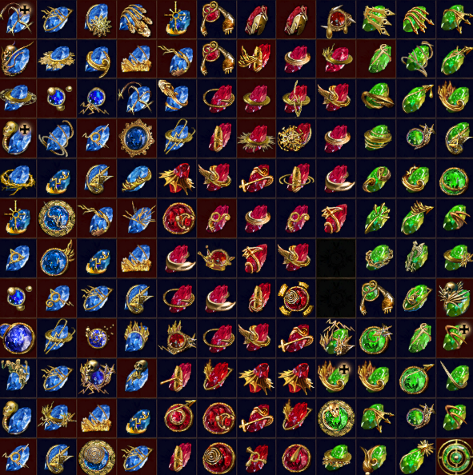

Path of Exile (PoE) is a free to play, Hack and Slash RPG game published by Grinding Gear Games
Gameplay
You control your character from a overhead perspective and fight monsters in outdoor areas, caves and dungeons.
 There are 7 classes to play as (Duelist, Marauder, Ranger, Scion, Shadow, Templar and Witch). Each of those classes are aligned with one or two of the three attributes (Strength, Dexterity and Intelligence).
There are 7 classes to play as (Duelist, Marauder, Ranger, Scion, Shadow, Templar and Witch). Each of those classes are aligned with one or two of the three attributes (Strength, Dexterity and Intelligence).Choosing your class is always hard for new players because of the massive passive tree.
there are 1325 total skill nodes and you only get 1 skill point each level (Max level = 100). and another 22-24 skill points from quests. So you have to choose wisely where you put your points in.
 Choosing where you put your skill points isnt the only hard decision you need to make while making your build, you also need to choose where to put your ascendancy points into and also which ability gems you are gonna use.
Most people choose to take builds from other people because of how hard it is to make your own. You can either take one from poe.ninja or search a build on youtube.